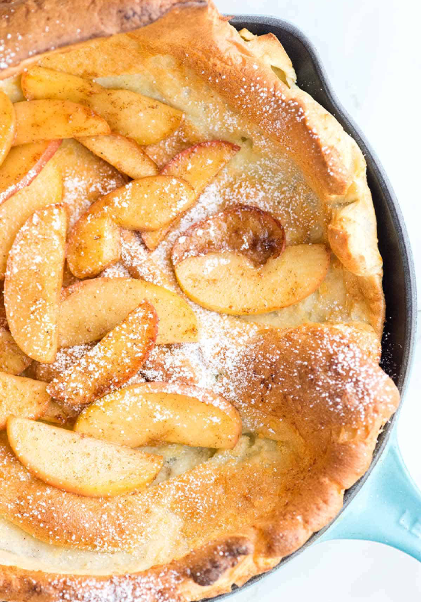
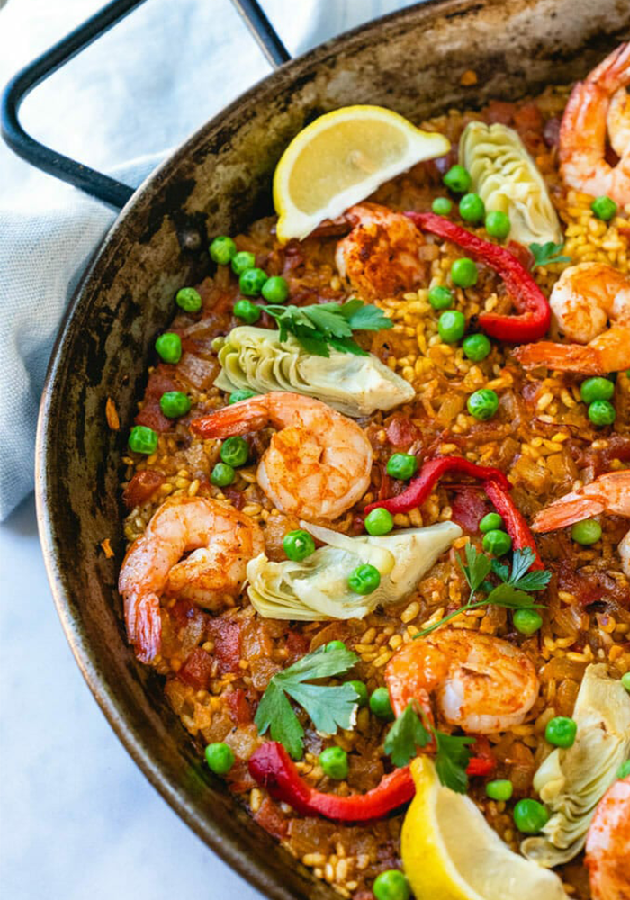
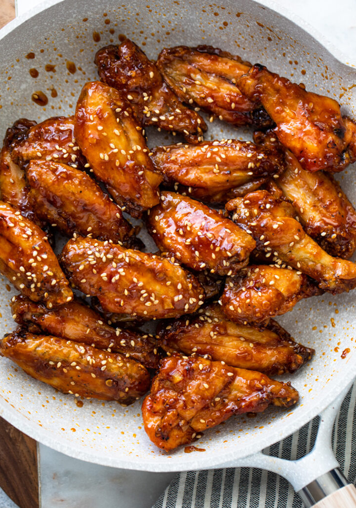
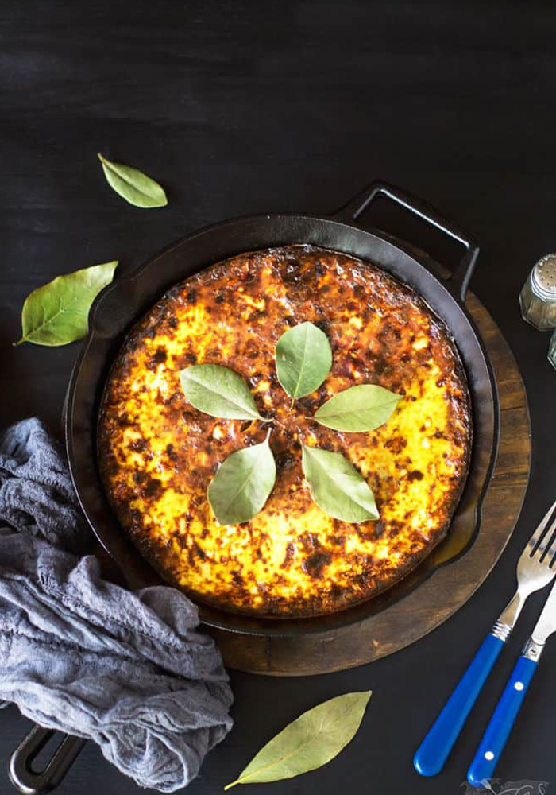
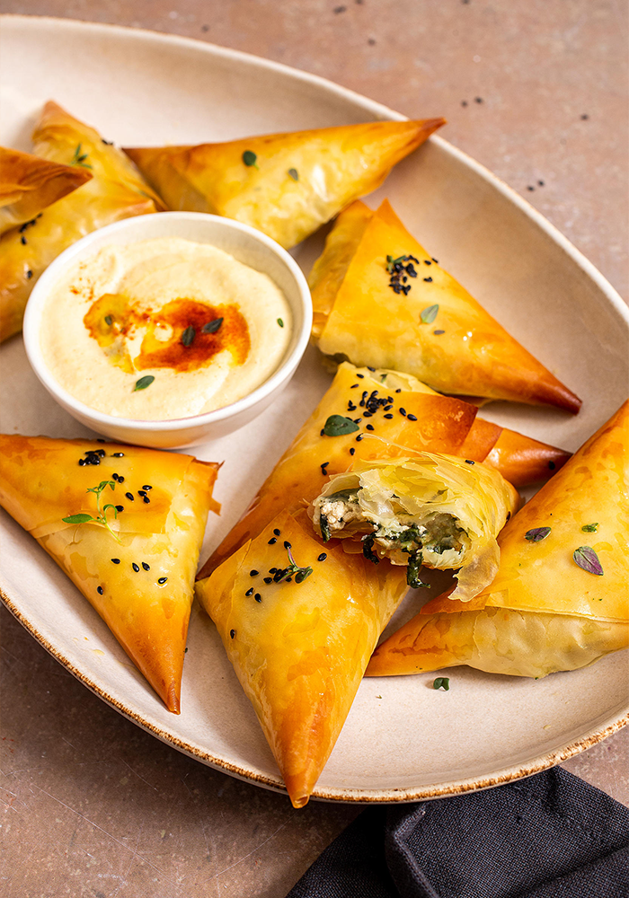

AROUND THE WORLD
What better way to enjoy the culinary experience than to do it from various locations around the globe. Take a savory ride to multiple destinations as you incorporate these delectable and eye-opening additions into your kitchen.

Netherlands - Apple Pancakes
- 1 cup flour
- pinch of salt
- 1 ⅓ cups milk
- 1 large egg
- 2 tablespoons butter
- 3 large eating apples
- 1 tablespoon water
- small bar of chocolate
- Sift the flour and salt into a bowl. Beat the egg and milk into the flour, to make a batter.
- Peel, core, and slice the apples. Put them in a pan with the water, and simmer for five minutes.
- Melt a little butter over a gentle heat in a small frying pan. Pour in enough batter to cover the bottom.
- Lift the pancake out when it's cooked on both sides. Put it into a warm over while you make the next one.
- Put some apple on eachpancake, and fold in half. Top with grated chocolate.

Spain - Paella
- 3 boned and skinned chicken breasts
- ½ green pepper
- ½ red pepper
- 1 clove garlic
- 1 onion
- 3 tablespoon olive oil
- 1 ½ cups long-grain rice
- 2 ¼ cups water
- 16 oz. canned tomatoes
- 1 teaspoon turmeric
- ¾ cup frozen peas
- 8 cooked shrimp
- 8 cooked mussels (optional)
- pinch of salt
- pinch of paprika
- 1 lemon
- Peel garlic and onion. Take the seeds and stalks out of the peppers. Chop them all up. Slice the chicken into thin strips.
- Heat the oil in a wide, shallow pan, and fry the chicken strips until they turn white. Add the chopped vegetables.
- Add the rice. Cook for a few minutes, stirring all the time.
- Add the tomatoes, water, turmeric, salt, and paprika. Simmer until the rice is cooked (about 15 minutes).
- Stir in the peas, and lay the shrimp and the mussels on top.
- Cook for five more minutes, then serve with wedges of lemon.

China - Soy Chicken Wings
- 2 tablespoons soy sauce
- 1 tablespoon Chinese five-spice
- 1 tablespoon lemon juice
- 2 green onions
- 1 tablespoon honey
- 1 tablespoon tomato paste or ketchup
- 12 chicken wings
- some aluminum foil
- Chop the onions. Mix with the soy sauce, spice, lemon juice, honey, and tomato paste in a bowl.
- Prick the chicken skin and coat with the sauce. Cover, and leave overnight in the refrigerator.
- Set the oven to 425°F. Put the coated chicken wings on a cookie sheet lined with a sheet of aluminum foil. Keep the extra sauce.
- Cook for about 45 minutes, turning them frequently and brushing with extra sauce. They should be crisp, brown, and tender.

South Africa - Bobotie
- 1 onion
- 1 tablespoon olive oil
- 2 slices bread
- 1 cup milk
- 1 lb. ground beef
- 1 tablespoon curry powder
- ¼ cup slivered almonds
- ⅓ cup raisins
- 1 tablespoon lemon juice
- pinch of salt and pepper
- 2 eggs
- Cut the crusts off the bread, break it into chunks, and soak it in half of the milk.
- Chop the onion. Heat the oil in a pan, and fry the onion over a low heat for ten minutes.
- Add the beef, curry, powder, lemon juice, nuts, raisins, salt, and pepper to the pan. Fry until the meat is brown all over.
- spoon all of it into an ovenproof dish. Beat the eggs with the rest of the milk, an dpour over the mixture.
- Put it in the oven for 1 ¼ hours. The top of the bobotie should be set and golden brown.

Middle East - Borek
- 8 oz. readymade filo pastry
- 4 tablespoons olive oil
- 12 oz. feta cheese
- Large bunch of mint
- Pinch of pepper and nutmeg
- Heat oven to 350°F. Crumble the feta cheese into a mixing bowl. Add the pepper and nutmeg.
- Wash the mint, and cut up with scissors. Add to the cheese, and mash with a fork until creamy.
- Take out pieces of filo pastry and separate carefully. Cut them into strips about 3 inches wide.
- Brush strips with oil, and put a teaspoonful of feta in the corner of each one. Fold into triangular shapes.
- Keep folding, so that you end up with fat little triangles. Repeat until all the feta is used up.
- Brush with oil, and bake on a greased cookie sheet for 25 minutes, or until golden.